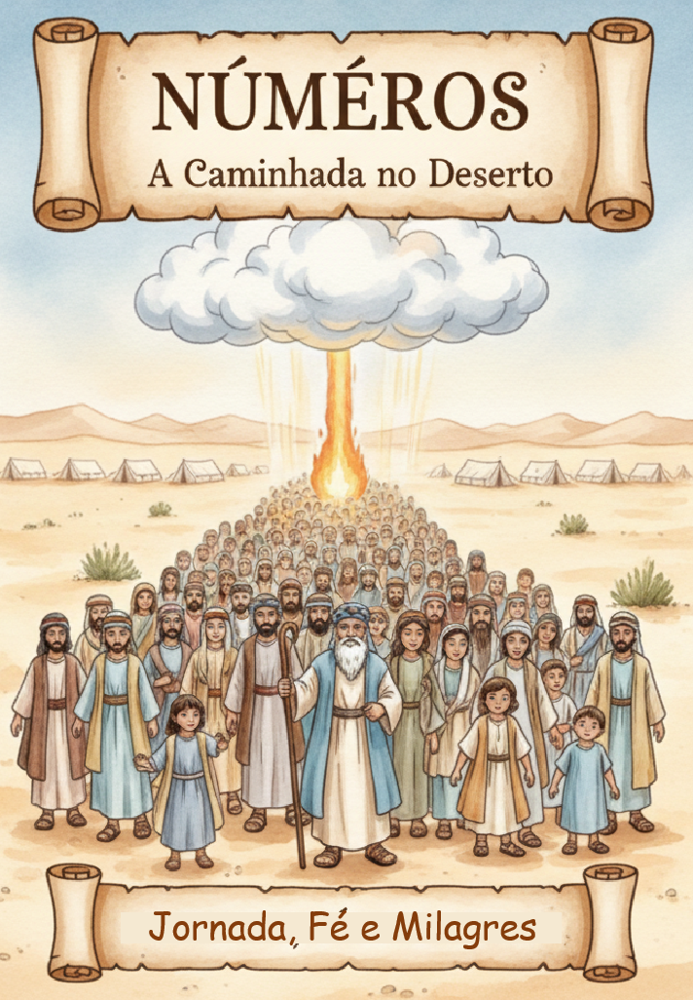
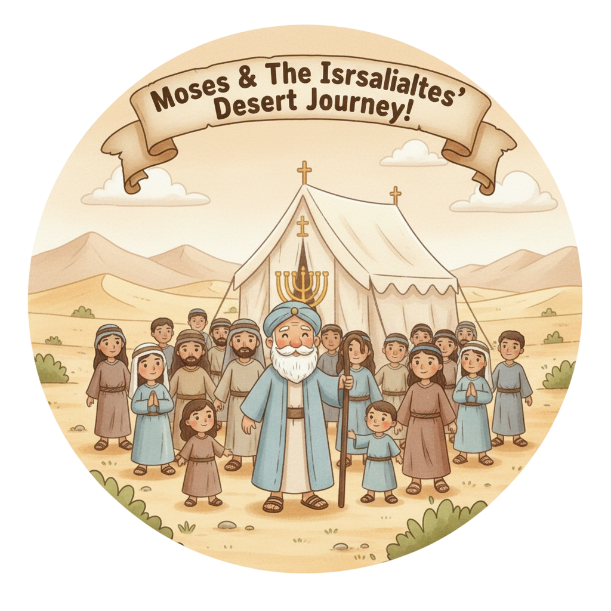
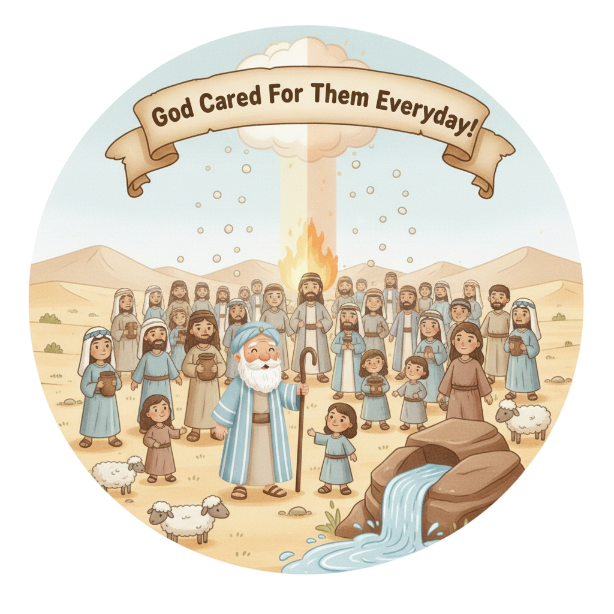
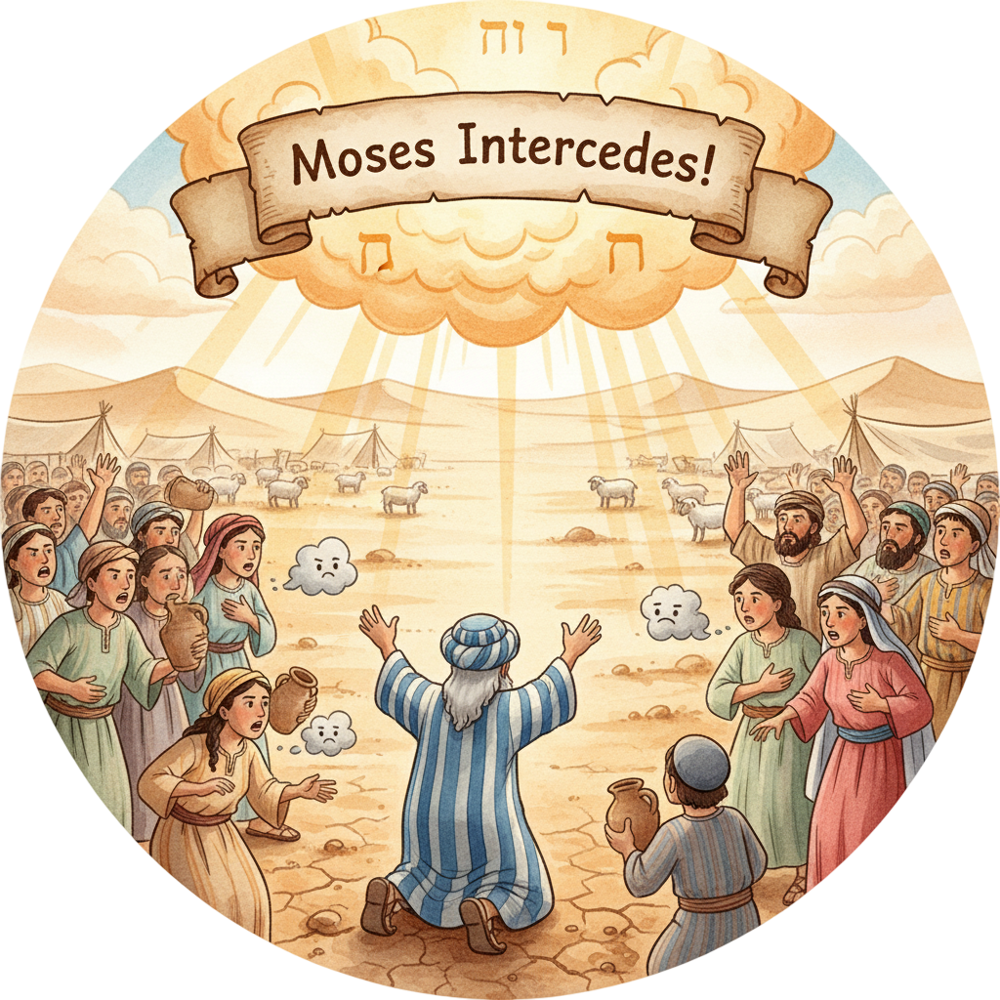
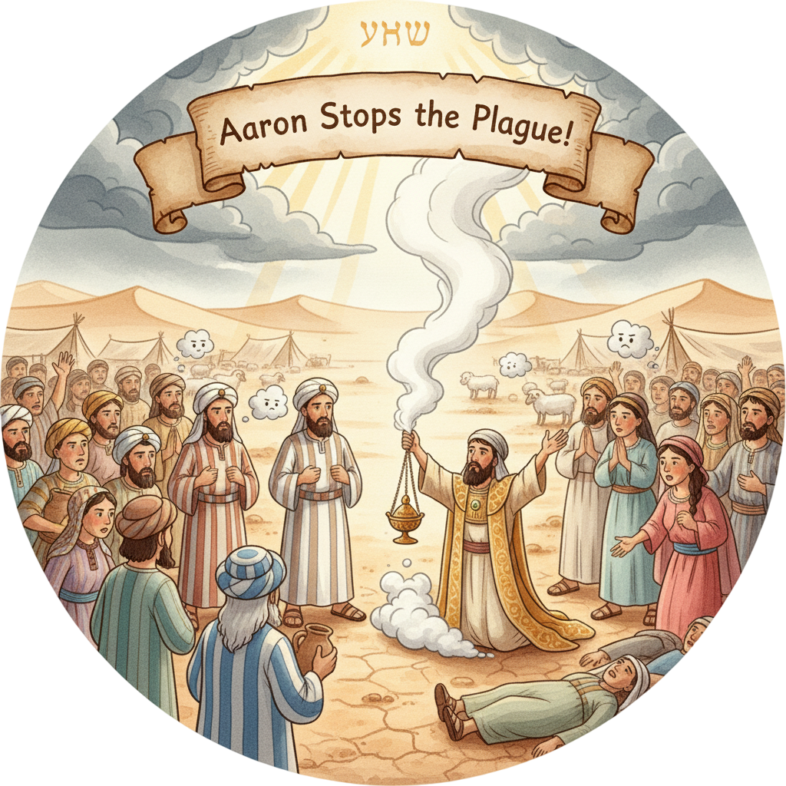
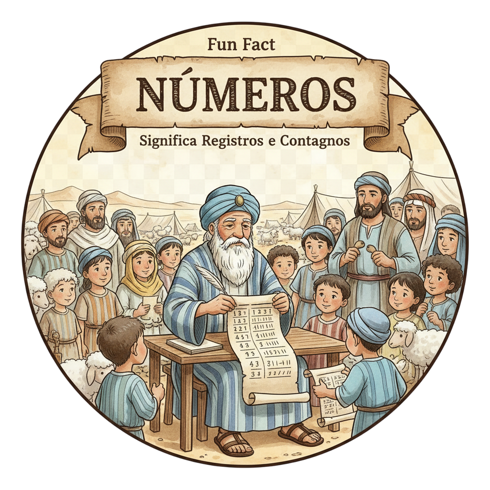

A Jornada no Deserto — Um Resumo Visual para Crianças
No deserto quente, sob o sol a brilhar,
Deus guiou Seu povo sem nunca falhar.
Com nuvem de dia e fogo à noite,
Mostrou que confiar é o melhor acoite!
📖 Números 10:33 — "A arca do Senhor ia adiante deles... para lhes buscar lugar de descanso."
O povo reclamou, queria voltar atrás,
Mas Deus tinha planos de dar-lhes muito mais!
Quando confiamos, mesmo na dor,
Descobrimos o cuidado do nosso Senhor!
📖 Números 14:3 — "Por que o Senhor nos traz a esta terra... não nos seria melhor voltarmos ao Egito?"
Quarenta anos andando, aprendendo a esperar,
Deus nunca desistiu de os abençoar!
Cada promessa que Ele faz,
Sempre, sempre se cumpre, trazendo paz!
📖 Números 23:19 — "Deus não é homem para mentir... falou, e não o fará? Prometeu, e não o cumprirá?"
"Deus não é homem para mentir... Falou, e não o fará? Prometeu, e não o cumprirá?"
— Números 23:19
🏜️ O que isso significa? Balaão era um profeta pago para amaldiçoar Israel — mas só conseguia dizer bênçãos! Por quê? Porque Deus tinha feito promessas ao Seu povo e nenhum ser humano nem espírito pode desfazê-las. Quando Deus promete algo, pode anotar: vai acontecer. Sempre.

Guiar 600 mil homens (mais mulheres e crianças) pelo deserto por 40 anos exigia muita paciência! Moisés intercedeu pelo povo toda vez que eles pecavam, orou quando faltava comida e água, e nunca abandonou a missão.
📖 Nm 12:3 — "Moisés era mui manso, mais do que todos os homens que havia sobre a face da terra."
Doze espiões foram enviados para ver a Terra Prometida. Dez voltaram com medo: "É impossível!" Só Calebe e Josué disseram: "Podemos, porque Deus está conosco!" Por isso, foram os únicos da geração que entraram na terra.
📖 Nm 14:9 — "Não vos rebeleis... não os temais; o Senhor é o nosso protetor."
O rei Balaque pagou Balaão para amaldiçoar Israel — mas toda vez que ele abria a boca, saíam bênçãos! E o mais engraçado: sua jumenta falou e o repreendeu antes que um anjo o fizesse. Até os animais servem a Deus!
📖 Nm 22:28 — "Então o Senhor abriu a boca da jumenta, e ela disse a Balaão: Que te fiz eu?"
O livro abre com Deus mandando Moisés contar o povo — 603.550 homens em idade de guerra! Esse censo organizou o povo para a jornada. Deus se importa com os detalhes: cada pessoa, cada família, cada tribo foi contada.
📖 Nm 1:46 — "Todos os recenseados foram seiscentos e três mil, quinhentos e cinquenta."
O povo reclamou da comida, da falta de água, da liderança de Moisés e até da Terra Prometida. O resultado foi devastador: aquela geração de adultos passou 40 anos a mais no deserto e não entrou na terra. Reclamar tem custo!
📖 Nm 14:29 — "Os vossos cadáveres cairão neste deserto... vós não entrareis na terra."
O povo foi mordido por serpentes venenosas depois de murmurar. Deus mandou Moisés fazer uma serpente de bronze e colocá-la num poste — todo que olhasse para ela seria curado! Jesus usou essa história para falar de Si mesmo na cruz.
📖 Nm 21:9 — "Se alguma serpente mordia alguém, este olhava para a serpente de bronze, e sarava."
O livro termina com a nova geração — filhos dos que morreram no deserto — acampada nas planícies de Moabe, prontos para entrar em Canaã. 40 anos de preparação estavam chegando ao fim. A promessa continuava viva!
📖 Nm 36:13 — "Estes são os mandamentos e os juízos... nas planícies de Moabe, junto ao Jordão."


Mesmo depois de décadas de reclamações e rebeliões, Deus continuou provendo maná, água e proteção. Sua fidelidade não depende do nosso comportamento — depende do Seu caráter!
📖 Nm 14:18 — "O Senhor é longânimo e grande em misericórdia, que perdoa a iniquidade."
Os 10 espiões com medo convenceram o povo a não entrar na Terra Prometida — e toda aquela geração perdeu a bênção. O medo e a descrença têm consequências. Só Calebe e Josué, que confiaram, entraram na terra!
📖 Nm 14:24 — "O meu servo Calebe... seguiu-me de todo o coração... o farei entrar na terra."
Jesus disse: "Assim como Moisés levantou a serpente no deserto, assim o Filho do Homem deve ser levantado" (Jo 3:14). A serpente de bronze em Números era uma imagem profética de Jesus na cruz — quem olha para Ele é salvo!
📖 Nm 21:8 — "Todo aquele que for mordido, e olhar para ela, viverá."
Números é como um diário de viagem — registra 40 anos de acampamentos, milagres, falhas e fidelidade. É a prova histórica de que Deus acompanhou pessoalmente cada passo do povo no deserto.
📖 Nm 33:2 — "Moisés escreveu as suas partidas, segundo as suas jornadas, por mandado do Senhor."
Paulo, no NT, cita Números como exemplo: "Não murmurardes, como alguns deles murmuraram, e pereceram" (1 Co 10:10). O povo do deserto é um espelho — e Deus quer que a nova geração aprenda com os erros da anterior.
📖 Nm 11:1 — "Quando o povo se queixou... o Senhor ouviu, e acendeu-se a sua ira."
O segundo recenseamento ao final do livro conta os filhos da geração rebelde — uma nova geração, nascida no deserto, que cresceu vendo os milagres de Deus. Eles seriam os que entrariam na promessa!
📖 Nm 26:64-65 — "Entre eles não havia nenhum dos que Moisés e Arão contaram... no deserto do Sinai."


O nome vem do grego "Arithmoi" por causa dos dois recenseamentos no livro (capítulos 1 e 26). Mas o nome hebraico original é "Bemidbar" — que significa "No Deserto"! Esse nome diz muito mais sobre o que o livro realmente é.
Em Números 22, a jumenta de Balaão viu um anjo que o profeta não conseguia ver — e falou com ele! É um dos dois animais que falam na Bíblia (o outro é a serpente em Gênesis). A jumenta foi mais sábia que o profeta que montava nela — e Deus usou isso para enviar um recado urgente!
A distância do Monte Sinai à Terra Prometida era de apenas 11 dias de caminhada (Dt 1:2). Mas o povo levou 40 anos por causa da incredulidade! A desconfiança em Deus pode fazer você andar em círculos por muito tempo onde poderia chegar rápido.
O povo passou 40 anos no deserto porque desconfiou de Deus quando os espiões deram um mau relatório. Existe alguma área na sua vida onde o medo ou a reclamação estão te impedindo de avançar?
Dez espiões viram gigantes e disseram "não podemos". Dois viram os mesmos gigantes e disseram "com Deus podemos!" Qual dos dois grupos você se identifica mais? O que faria você confiar como Calebe?
Deus mandou contar cada pessoa pelo nome — ninguém era anônimo. Isso mostra que você importa individualmente para Deus. Como essa verdade muda a forma que você se vê e vê os outros ao redor?
Escreva Números 23:19 e leve esta semana. Toda vez que duvidar de uma promessa de Deus, leia e lembre: Ele não é homem para mentir. O que Ele prometeu, vai cumprir!
O desafio de Números: tente passar 7 dias sem reclamar de nada. Cada vez que sentir vontade de murmurar, troque por uma oração de gratidão. No final da semana, veja o que mudou!
Identifique um "gigante" na sua vida — algo que parece impossível ou que te dá medo. Esta semana, ore sobre isso com a atitude de Calebe: "Com Deus, podemos conquistar!" — e dê um passo de fé.
© 2025 - Trilho Kids
Desenvolvido com ❤️ para crianças